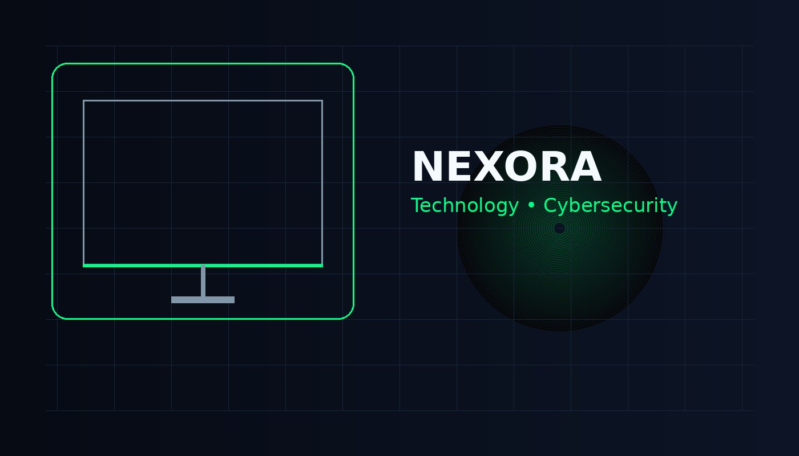

NEXORA / HOME
Teknologi dan Cybersecurity.
NEXORA membahas teknologi dan dasar keamanan digital dengan penjelasan yang sederhana.

01
Cybersecurity
02
Technology
∞
Perkembangan
Tentang NEXORA
Website informasi sederhana
NEXORA dibuat untuk membahas teknologi dan cybersecurity secara singkat dan mudah dipahami.
Teknologi sudah menjadi bagian dari kegiatan sehari-hari. Karena itu, kita juga perlu memahami cara menggunakannya dengan aman.
Topik
Pilih materi yang ingin dibaca
🛡️
Cybersecurity
Mengenal keamanan data, ancaman digital, dan kebiasaan aman saat menggunakan internet.
Buka halaman →⚡
Technology
Mengenal AI, cloud computing, IoT, robotics, dan contoh teknologi di sekitar kita.
Buka halaman →